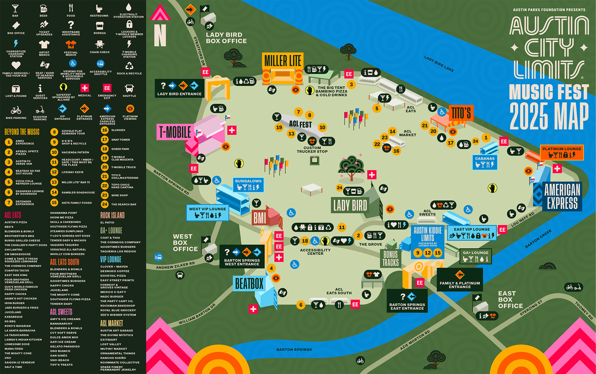

ACL Festival is a beautiful disaster. Ten days of live music, questionable food choices, and heat so intense you feel like you're being slowly broiled on a Texas grill. Last year I went in with zero plan. I ate whatever looked good, drank whatever was cold, and came home five pounds heavier and two weeks behind on my fasting schedule. I told myself it was worth it. The music was amazing. The tacos were amazing. The weight gain was not.
I decided this year would be different. I had been fasting for long enough to know that a festival doesn't have to derail everything. You just need a strategy. Not a rigid, joy‑killing plan. Just a loose framework that keeps you on track without making you feel like you're missing out.
The FastingTool calculators helped me build that framework. I used the Window Planner first. ACL runs from noon to 10 PM, which is a nightmare for my normal 11‑5 eating eating-window-planner. If I stuck to that, I would either have to eat before the music started or wait until after it ended. Both options felt wrong. So I shifted my eating-window-planner. For the festival days, I moved my eating eating-window-planner to 2 PM to 8 PM. That way I could eat during the festival, enjoy some of the food options, and still have a solid fasting stretch overnight. The Window Planner let me test different schedules before I committed. I could see how each shift affected my fasting hours and my energy levels. I settled on the 2‑8 eating-window-planner because it gave me the most flexibility.
Then I used the Goal Planner. I set a realistic goal for the festival week. Not "lose weight," not "stick to 18 hours every single day," but "maintain my weight and get back on track within three days." That was achievable. It took the pressure off. I wasn't trying to be perfect. I was just trying to stay in the ballpark.
The other tool I used was the Session Tracker. I logged my fasting windows every day, even when I was tired or distracted. It was a simple way to stay accountable. I also used it to track my food choices, just a quick note about what I ate. That helped me see patterns. On the days I ate greasy food, I felt worse the next morning. On the days I ate protein and vegetables, I felt fine. That feedback loop made me want to make better choices.
The festival itself was chaotic, but my fasting wasn't. I ate lunch around 2 PM, usually something from a food truck. I had dinner around 7 PM, another meal. I drank water constantly. I avoided alcohol because it messes with my sleep and my fasting. I wasn't perfect. I had a few bites of things I shouldn't have. But I didn't binge. I didn't go off the rails.
The heat was the biggest challenge. Austin in October is still in the 90s. I was sweating constantly. I lost a lot of electrolytes. I added a pinch of salt to my water and it helped. I also made sure to eat something salty with my meals, like pickles or chips. It kept me from feeling weak and lightheaded.
The social pressure was also real. Everyone around me was eating and drinking constantly. Tacos, beer, pizza, ice cream. It was everywhere. But I realized that I didn't want most of it. I wanted a few things, but not everything. I learned to be selective. I would walk past a food stand and ask myself, "Do I actually want this, or am I just bored?" Most of the time, I was just bored.
I also found that eating a solid meal before the festival helped. I know that sounds counterintuitive, but it worked for me. A big lunch at 2 PM meant I wasn't hungry at 4 PM when everyone else was snacking. I could skip the mindless eating and just enjoy the music.
By the end of the festival, I had gained zero pounds. Not lost, not gained. I had maintained. And I felt good. I wasn't tired and bloated like last year. I wasn't dreading the scale. I was just back to normal.
The real test came after ACL. I used the Goal Planner to set a recovery goal. Three days to get back to my normal 11‑5 schedule. That gave me a clear target. I didn't try to jump back in immediately. I eased into it. First day, 12‑6. Second day, 11:30‑5:30. Third day, back to 11‑5. It worked. Within a week, I felt like I had never left.
The FastingTool calculators made the whole process easier. I wasn't guessing. I was planning.
📅 Window Planner Plan your eating eating-window-planner around festival hours. Shift your eating-window-planner without breaking your rhythm. All data stays in your browser — we never see it. The Goal Planner kept me honest about what I actually wanted.
🎯 Goal Planner Set a realistic goal for festival week. Maintain, don't push. Then plan your recovery. All data stays in your browser — we never see it. And the Session Tracker gave me the feedback I needed to adjust.
📋 Session Tracker Log your fasting windows and food choices. See what works and what doesn't. All data stays in your browser — we never see it. The thing I learned from ACL is that fasting doesn't have to be perfect. It just has to be intentional. You can enjoy a festival and still stay on track. You just need to think ahead. Plan your eating-window-planner. Set realistic fasting-goal-planner. Track your progress. Be kind to yourself when you slip up.
I used to think that festivals were a free pass. I would eat whatever I wanted and deal with the consequences later. Now I know that I can enjoy myself without wrecking my routine. It's not about restriction. It's about balance.
Next year, I'll do the same thing. Shift my eating-window-planner. Set a maintenance goal. Track my sessions. Come out the other side feeling good instead of feeling guilty. That's the real win.
— Maya, Austin
P.S. I still ate a few tacos. They were worth it. But I didn't eat them all. That's the difference between last year and this year.